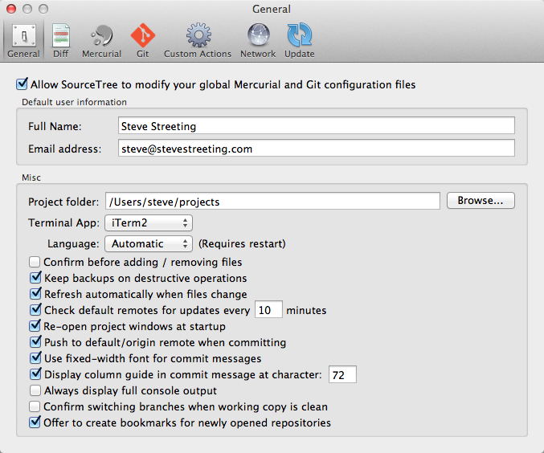

Preferences: General

Allowing SourceTree to modify your Mercurial & Git configuration
When you run SourceTree for the first time, you will be asked whether you will allow it to modify your Mercurial and Git global configuration. The Preferences window contains this option so you can alter your decision later.
The changes SourceTree makes to your configuration are non-destructive and are as follows:
- Changing your user details if you alter them in this Preferences pane
- Adding new diff & merge tool configurations for SourceTree to reflect the ones you choose here (existing ones are unaffected)
- Updating your global ignore lists if you ask.
Default user information
This section should contain the user name and email you will use to commit to all repositories by default. You can set these per-repository too in the Settings option in the repository window, but in the absence of a specific setting this is the one that will be used.
Misc
Project Folder - The default base folder which will be used as a target for clone operations.
Terminal App - The application which will be used when you click the Terminal button on the toolbar or Open In Terminal on the menu.
Language - SourceTree usually picks the language automatically, but if you want to manually change it you can do so here. Requires a restart to take effect.
Confirm before adding / removing files - Whether to display a confirmation dialog when you use the add or remove functions.
Keep backups on destructive operations - If supported by the underlying system, whether to keep backup files when performing destructive operations like 'revert'.
Refresh automatically when files change - If enabled, SourceTree will refresh views automatically when the operating system says a file has changed.
Check default remotes for updates - If enabled, SourceTree will poll your default remotes at the frequency specified in order to provide updated counts of commits that are awaiting pull / push.
Re-open project windows on startup - The open windows when you close SourceTree will be saved and re-opened next time you start it.
Push to default/origin remote when committing - If checked, the 'Push to remote' box will be automatically checked on the commit dialog every time you open it.
Use fixed-width font for commit messages - By default SourceTree uses a variable width font for displaying commits, and the editable commit message box. Some users like to use fixed-width fonts instead, which are not as compact but can be used with whitespace formatting if desired.
Display column guide in commit message at character: - this option is only enabled if you've opted for a fixed-width commit font, and when enabled displays a soft line length guide at the position of your choosing (default 72 characters).
Always display full console output - By default SourceTree displays only a progress bar when performing tasks and you have to use the disclosure triangle to expand the window to see the full output (unless there's an error, when that's displayed automatically). If you enable this option, all task windows in SourceTree will be expanded by default and will not close automatically, so you can always see the full output.
Confirm switching branches when the working copy is clean - when switching branches or checking out new branches, if enabled this option will cause the warning to appear only when there are changes in your working copy.
Offer to create bookmarks for newly owned repositories - when you open repositories which are not bookmarked, SourceTree will by default ask you whether you want to bookmark them. If you don't want that, you can disable this behaviour with this option.
See also
Diff Preferences
Mercurial Preferences
Git Preferences
Custom Actions Preferences
Update Preferences